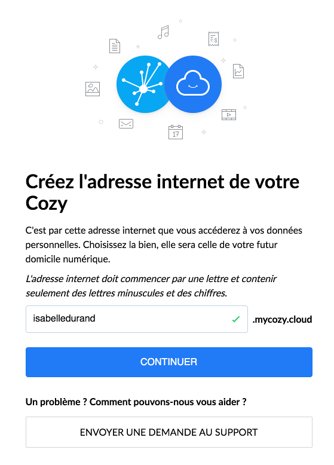
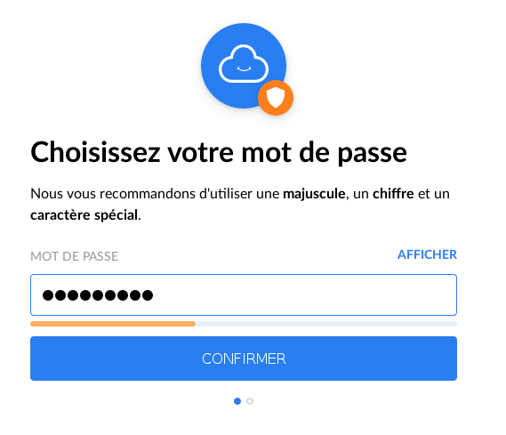

Bienvenue chez vous !¶
Voilà c’est parti, votre Cozy est sur le point de changer votre vie quotidienne ! Pour y parvenir et afin de vous faciliter au mieux cette installation, nous avons imaginé pour vous un mini-guide avec tous les indispensables pour démarrer votre Cozy.
Claude, notre expert de l’équipe Support qui connait Cozy comme sa maison, est l’auteur de cette documentation et vous livrera ses astuces.
Prêt (e) à adopter Cozy ? Nous vous accompagnons dans vos premiers pas !
Introduction¶
Notre charte d’engagement : vous redonner vos données personnelles dans un endroit sûr et accessible par vous seul est notre priorité¶
Comment vos données personnelles sont-elles protégées ?¶
Dans votre cloud personnel, vous êtes chez vous¶
Vous êtes la seule personne à avoir accès à vos données, lesquelles ne sont partagées avec aucun prestataire, sauf accord explicite et préalable de votre part donné au prestataire concerné.
Vos données vous appartiennent et nous n’y toucherons pas¶
Vos photos, vos données bancaires ou l’historique de votre poids, vous seul choisissez les données que vous souhaitez récupérer auprès des tiers qui aujourd’hui les détiennent. Vous êtes l’unique propriétaire des données de votre service Cozy et des sauvegardes que Cozy Cloud réalise automatiquement. Toute utilisation de vos données par un tiers suppose votre accord explicite et préalable.
Vous êtes libre de supprimer, modifier, copier, partager vos données grâce au service Cozy, et ce aussi longtemps que vous êtes utilisateur du service.
Nous ne regardons pas vos données personnelles comme nous ne vous espionnons pas quand vous prenez votre douche.
Nous garantissons la transparence de notre plateforme.¶
Cozy est et restera un service reposant sur un logiciel libre : vous pouvez utiliser, copier, modifier (et améliorer !) le code source. Le choix de l’approche logiciel libre garantit la transparence du service Cozy, qui est auditable en toute circonstance, conformément à la licence libre du logiciel utilisé par Cozy Cloud.
Vous décidez de l’utilisation de vos données¶
La plateforme Cozy est conçue pour vous permettre de contrôler les données sortantes de votre Cozy. Ce contrôle des applications tierces est partagé par les utilisateurs de la communauté des Cozynautes, et Cozy Cloud s’engage à faciliter pour tous les utilisateurs de Cozy le signalement d’applications malicieuses. Notre objectif : ce qui est dans votre Cozy reste dans votre Cozy.
Bien démarrer avec Cozy¶
Créez votre adresse Cozy¶
Avant d’arriver à la maison, vous devez rentrer votre adresse dans un GPS ou la connaitre par cœur. C’est exactement la même chose pour votre Cozy mais sans la boussole !

L’adresse de votre Cozy, c’est la vôtre et à la différence de votre maison, elle ne figure pas dans les pages blanches visibles par tous.
Vous manquez d’imagination pour la créer ?
Pas de panique ! Nous vous avons préparé quelques exemples pour vous aider – attention, il ne suffit pas de les recopier mais bien d’imaginer votre adresse personnalisée :
isabelledurand73.mycozy.cloud
bernardlhermite.mycozy.cloud
zazadurand.mycozy.cloudL’astuce de Claude
Ajoutez votre adresse Cozy à vos favoris pour y accéder en un seul clic

Créer votre mot de passe¶
L’astuce de Claude
Pour créer un mot de passe complexe mais facile à retenir, imaginez une phrase absurde et créez le mot de passe à partir des initiales des mots et de la ponctuation. Ainsi, « Maître renard, sur un nuage perché, tenait en son bec de la pluie » deviendra « Mr,s1np,tesb2lp »

Bien utiliser votre Cozy¶
Nous avons élaboré une boîte à outils pour paramétrer votre Cozy et décupler ses capacités.
Sauvegardez vos fichiers et documents en un seul clic¶
Cozy vous permet d’enregistrer tous vos fichiers (photos, vidéos, documents administratifs, factures etc.) au même endroit et de les sauvegarder automatiquement. Ainsi, même si votre ordinateur tombe en panne ou si vous oubliez votre téléphone dans le train, tous vos fichiers restent protégés. Plus besoin d’un disque externe pour sauvegarder vos documents !
Ajout de fichiers à votre Cozy sur un ordinateur Windows ou Mac¶
- Vérifiez que l’application de bureau est installée sur votre ordinateur. Si vous n’avez pas rencontré de soucis en suivants nos conseils, vous devriez passer cette étape sans difficultés.
- Faites glisser et déposez les fichiers souhaités dans le dossier Cozy Drive.
- Simple comme dire bonjour n’est-ce pas ? Votre Cozy garde vos fichiers bien au chaud à l’abri de tous !


Sur votre Cozy depuis un navigateur¶
- Connectez-vous à votre Cozy en suivant l’adresse Internet que vous avez créé au début (Par exemple : isabelledurand.mycozy.cloud)
- Ouvrez votre application Drive dans le menu Applications si ce n’est pas déjà fait
- Cliquez sur le bouton bleu Transférer des fichiers en haut à droite de la fenêtre.
- Choisissez le fichier à ajouter, puis cliquez sur Ouvrir.

Accédez à vos fichiers ou que vous soyez et quand vous voulez¶
Enregistrez vos photos et vos documents dans Cozy, puis consultez-les à partir de l’application Cozy sur un ordinateur, un téléphone ou une tablette. Tous les fichiers que vous enregistrez dans Cozy sont automatiquement synchronisés sur l’ensemble de vos appareils, et restent ainsi toujours à portée de main.
Pour retrouver vos fichiers sur tous vos appareils (PC, mobile et tablette) et synchroniser vos photos avec votre Cozy, téléchargez l’application de Cozy pour iOS et l’ application pour Android.
Connectez-vous pour enfin déconnecter !¶
Cliquez sur Applications en haut à droite de votre écran et cliquez sur Cozy Collect, votre application regroupant les collecteurs disponibles dans votre Cozy.


En sélectionnant les connecteurs de vos fournisseurs, vous allez automatiser la récupération de vos données liées à vos différents comptes client.
C’est très simple : sélectionnez le fournisseur, entrez vos identifiant et mot de passe – ce sont ceux qui vous permettent de rentrer sur votre espace client. En un seul clic, votre connecteur est opérationnel et actif.
Un macaron vert apparaitra sur le connecteur ainsi actif.
Vous pouvez renouveler l’opération avec autant de connecteurs que vous le souhaitez (dans la mesure ou vous avez un compte client associé).

Avez-vous pensé à tout ?¶
Avez-vous téléchargé l’application Cozy Drive sur votre iPhone ou votre Android ?¶
Si oui, bravo ! Vous êtes déjà un Cozynaute confirmé !
Si non, voici la marche à suivre :
- Connectez-vous à l’adresse de notre site cozy.io
- Allez au bas de la page et cliquez sur le lien « Télécharger l’app mobile »
Vous êtes désormais sur la page : https://docs.cozy.io/fr/download/, vous pouvez cliquer sur le lien de votre choix en fonction de l’OS de votre appareil.
Où alors cliquez sur les icônes ci-dessous :


Avez-vous téléchargé l’application Cozy de bureau ?¶
Si oui, bravo ! Vous êtes déjà un Cozynaute confirmé !
Si ce n’est pas déjà fait, cela vous prendra moins de deux minutes pour l’installer :
- Connectez-vous à l’adresse de notre site cozy.io
- Allez au bas de la page et cliquez sur le lien « Télécharger l’app PC»
Vous êtes désormais sur la page : https://docs.cozy.io/fr/download/, vous pouvez cliquer sur le lien de votre choix en fonction de l’OS de votre PC : MacOS ou Microsoft Windows.
Félicitations ! Votre Cozy n’a désormais plus de secret pour vous.
Encore des questions ?¶
Notre équipe support se tient à votre disposition pour toute autre question. Visitez notre page Aide en ligne sur le site cozy.io.